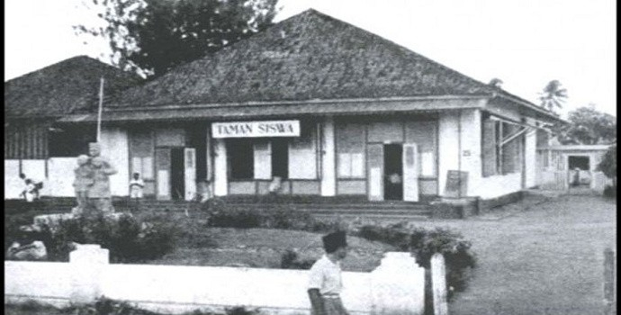

Around Us : Taman Siswa, Salah Satu Akar Perjuangan Bangsa
Oleh : andien
Ing ngarsa sung tuladha, ing madya mangun karsa, tut wuri handayani
Di depan harus memberi contoh yang baik, di tengah-tengah memberi semangat, di belakang memberi dorongan.
Betapa luar biasanya rangkaian kalimat yang terucap oleh Raden Mas Soewardi
Soerjaningrat, pelopor pendidikan bagi kaum pribumi yang akrab disapa Ki Hajar
Dewantara, terhadap pendidikan di Indonesia. Makna kalimat tersebut implementasinya
menjadi satu bentuk praktik pendidikan ideal di Indonesia. Kalimat tersebut juga menjadi inti
dari pengajaran di Taman Siswa.

sumber : dictio.id
Kiprah Ki Hajar Dewantara terhadap pendidikan bangsa yang paling dikenal luas oleh masyarakat Indonesia adalah pendirian Taman Siswa di Yogyakarta. Pendirian Taman Siswa pada 3 Juli 1922 adalah bentuk perlawanan beliau terhadap diskriminasi pendidikan yang diterapkan oleh pemerintah kolonial Belanda.
Pada saat itu, Belanda hanya memperbolehkan kaum pribumi untuk mengenyam pendidikan hingga tingkat sekolah dasar. Sedangkan para priyayi dan bangsawan Eropa,
diperkenankan menjelajah lautan ilmu hingga tingkat perguruan tinggi. Hal itu lantas menjadi semangat Ki Hajar Dewantara untuk mendirikan Taman Siswa ini.
Taman Siswa mengajarkan masyarakat pribumi tentang dasar-dasar kemerdekaan, tentang arti kemerdekaan. Pendirian teguh ditanamkan, kemerdekaan harus didapat dari usaha
sendiri. Kesuksesan harus diraih dan kejayaan diri harus didapat dengan berdiri diatas kaki sendiri. Jangan sampai bergantung pada orang lain. Begitu yang Taman Siswa ajarkan kepada murid-muridnya yang senantiasa berdatangan ke tempat penuh cakrawala di masa itu.
Penanaman prinsip yang kuat itu rasanya menjadi sebuah awal dari kesadaran masyarakat
pribumi untuk terus memperjuangkan kemerdekaan nusantara. Hal ini pun dilihat oleh
pemerintah kolonial sebagai ancaman. Pada saat itu, Belanda langsung mengambil
tindakan. Dikeluarkanlah UU Sekolah Liar yang membuat tidak bisa beroperasinya Taman
Siswa. Meski begitu, penanaman prinsip yang teguh ini menguat ke seluruh aspek di dalam
Taman Siswa. Para pengajar yang menjadi kunci utama, terus melakukan pergerakannya
secara sembunyi-sembunyi, untuk bisa mencerdaskan kaum pribumi demi menyadarkan
masyarakat akan pentingnya melawan dengan kekuatan sendiri.
Pendidikan menjadi kunci utama kesuksesan negeri. Terbukti, Indonesia bisa merdeka
karena juga mengandalkan akal para cendekiawan yang berperan besar di dalamnya.
Strategi demi strategi bisa terpikirkan berkat ilmu-ilmu yang dimiliki oleh para pejuang
kemerdekaan.
Meski saat ini Indonesia sudah bebas dari penjajahan dan pembelengguan para penjajah.
Masih banyak hal yang harus diperbaiki dan ditingkatkan demi mencapai seluruh tujuan
bangsa tercinta ini. Bahkan salah satunya adalah aspek pendidikan itu sendiri.
Jaya selalu pendidikan Indonesia, maju selalu masyarakat Indonesia!
Tahun ini, Hari Pendidikan Nasional 2021 mengusung tema "Serentak Bergerak, Wujudkan
Merdeka Belajar". Tema ini diambil dari konsep "Merdeka Belajar" yang menjadi tema besar
dari berjalannya sistem pendidikan dari masa menjabatnya Nadiem Makarim sebagai
Menteri Pendidikan dan Kebudayaan Republik Indonesia. Maju terus pendidikan Indonesia,
sejahterakan negeri tercinta wahai putra-putri bangsa!